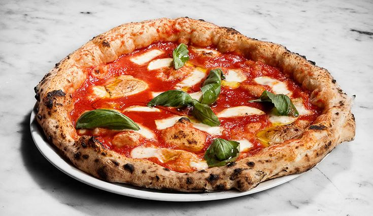
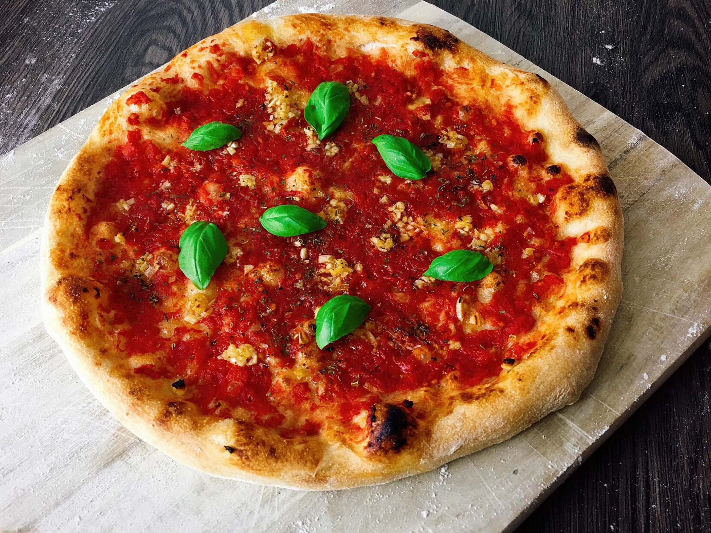
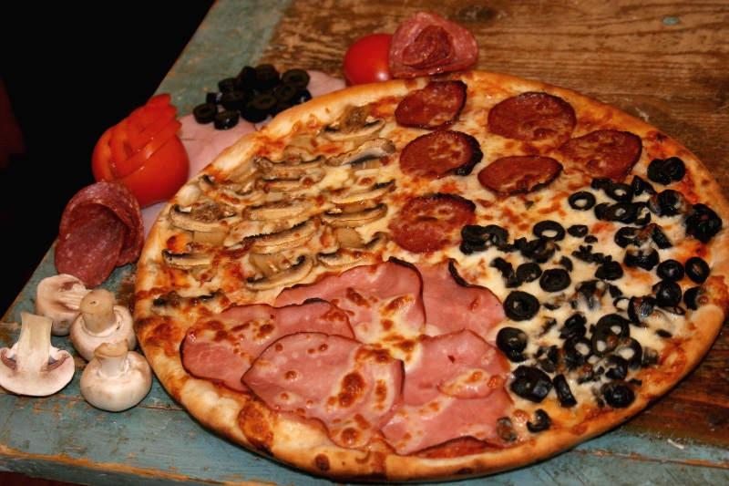
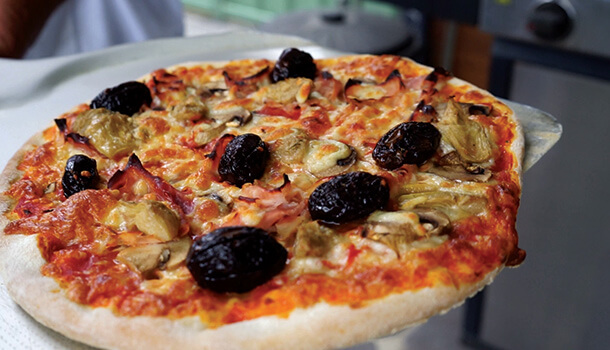
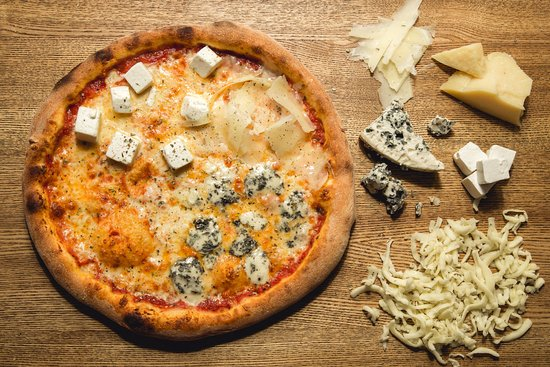

Welcome To Italiano Pizza!
Our Hand-picked collection of classic italian pizzas made the right way, the Italian Way.
Margherita Pizza
There's not much more to say – she is quite simply the queen of the table. Whether in its simple version with mozzarella fiordilatte or mozzarella de bufala (in which case it would technically be called a Bufalina pizza), the Margherita pizza is undoubtedly the favourite pizza of Italian people. As well as mozzarella, the other ingredients are tomato, oil and basil, combined in a traditional way by Italian pizza makers (called pizzaioli).
Marinara Pizza
The secret lies in its simplicity. Ordering this pizza is an excellent way to test the dough and the quality of the ingredients of the pizzeria you’re in: tomato, garlic, oregano and oil (sometimes even basil). Have you ever wondered why when you order a pizza Marinara, there is nothing in the ingredients reminiscent of the sea? Its origin is quite strange: the name comes from the fact that the ingredients – which are all easily preserved – were used by sailors during long voyages.
Prosciutto e funghi

Simplicity is also the name of the game with this pizza – it’s a ham and mushroom pizza, but turbo charged because it’s Italian-style. It can be ordered in two different versions: with cooked ham or with raw ham that is placed on after cooking.
Quattro Stagioni
Another of the Italians' favourite pizzas is undoubtedly the Quattro Stagioni, meaning ‘Four Seasons’. It is a mixture of strong flavours together with mozzarella and tomato. On this pizza you can find cooked ham, mushrooms, artichokes and black olives. In some cases, you can even find small additions like anchovies or other specialties. The position of the ingredients on this type of pizza is the most important factor: each one must be placed in its own quarter.
Capricciosa
Very similar to the Quattro Stagioni is the Capricciosa pizza. The ingredients are the pretty much same, except the Capricciosa doesn’t usually have olives and all the ingredients are mixed together on the base of tomato sauce and mozzarella, forming a delicious union of flavours.
Quattro Formaggi
You have to be a true cheese lover to appreciate this creamy, delicious and attractive white pizza, whose name means simply ‘Four Cheeses’. The ingredients and type of cheese used can vary from one pizzeria to another: provolone, parmigiano reggiano, mozzarella, stracchino, fontina or gorgonzola. Whichever cheeses are used, you’re sure to be left licking your fingers clean!
Ortolana/Vegetariana

Pizza is even a good food to eat while you’re on a diet! This pizza is perfect for those who want to eat something delicious once in a while, but at the same time keep an eye on their waistline. In addition to mozzarella and tomato, the ingredients of this pizza are peppers, aubergines and courgette/zucchini cut into strips or thin slices, or any other mixture of roasted fresh vegetables.
Diavola

The Diavola is a great pizza for anyone who loves strong flavours as the main ingredient here is spicy salami. It is one of the best-known pizzas outside of Italy, especially in the United States and the UK, although you might know it better by another name – the Pepperoni Pizza!
Boscaiola

While this pizza is typical from Naples, each region of Italy tries to give the best of itself and use its own typical products. The Boscaiola pizza is really tasty and the topping consists of mushrooms, slices of sausage and mozzarella.
Frutti di Mare

This pizza combines the deliciousness of pizza with the fantastic seafood that can be found in Italy: it has the obligatory tomato and mozzarella, but also seafood like shrimps, mussels and squid, plus seasonings of garlic and parsley.